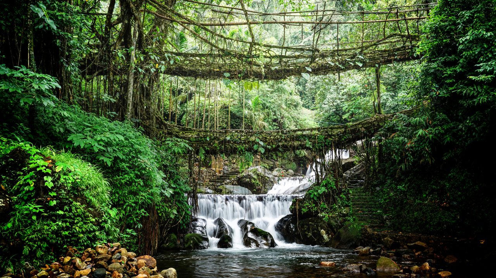
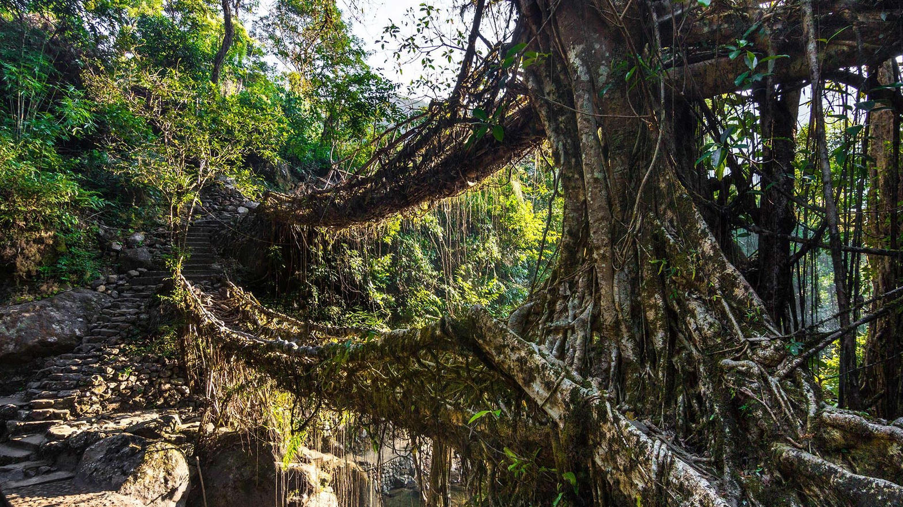
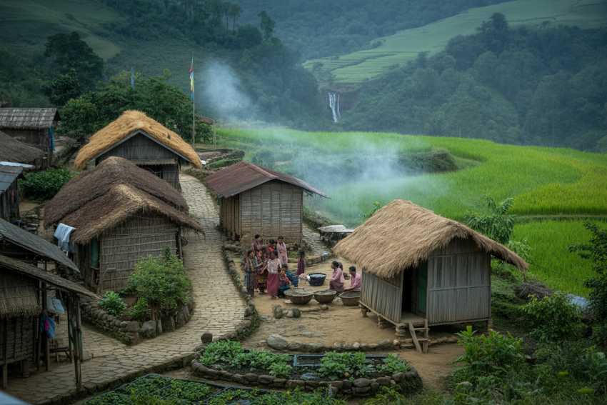

Ficus roots trained across a stream — a short village walk or a long stair to Nongriat
Living root bridges are Ficus roots guided across water over decades. Riwai, near Mawlynnong, is a short walk and fits a first week. The double-decker at Nongriat is a long, steep stair and a night in the valley if you want to do it properly — not a tick after Nohkalikai.
Monsoon makes the steps slick and the streams loud. We will not put Nongriat on a family afternoon. Wear shoes that can take mud.

The week we recommend for Nongriat.
Good for Riwai.
Roots shine; steps punish.
Heat in the valley; carry water.



Share fitness. The short bridge belongs on a Dawki day. The double-decker needs its own hours.